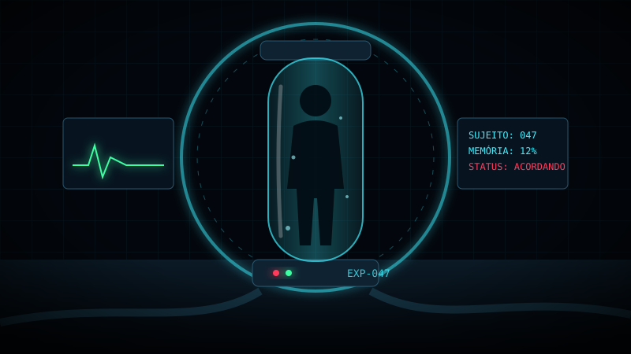
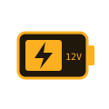

Arquivo classificado • Nível 047
LABORATÓRIO SECRETO
> Experimento 047 acordou...

Você acordou dentro de uma cápsula.
Os alarmes estão tocando, as portas estão trancadas e você não lembra do próprio nome. Uma voz automática repete: "Contenção em 60 minutos."
Para sair, você vai precisar de três coisas:
 Um cartão de acesso
Um cartão de acesso A senha da porta
A senha da porta
Uma bateria para ligar o painel